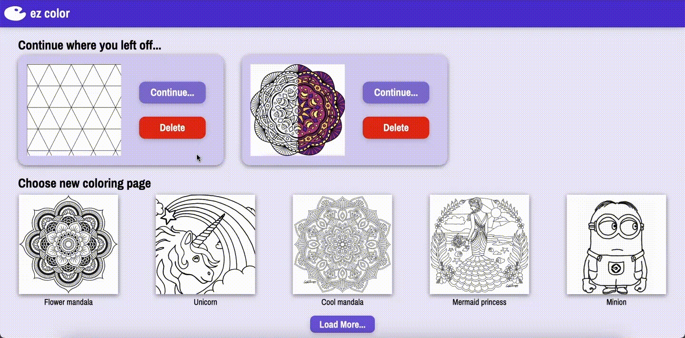
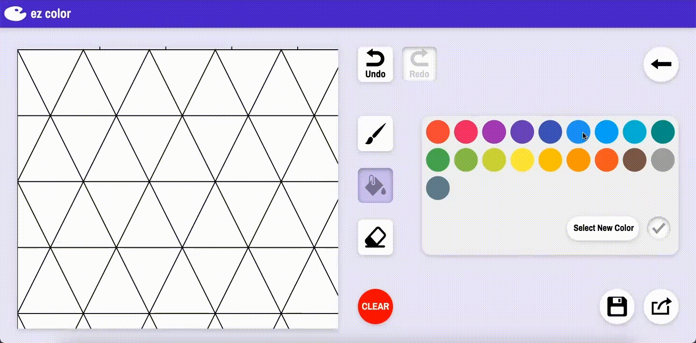
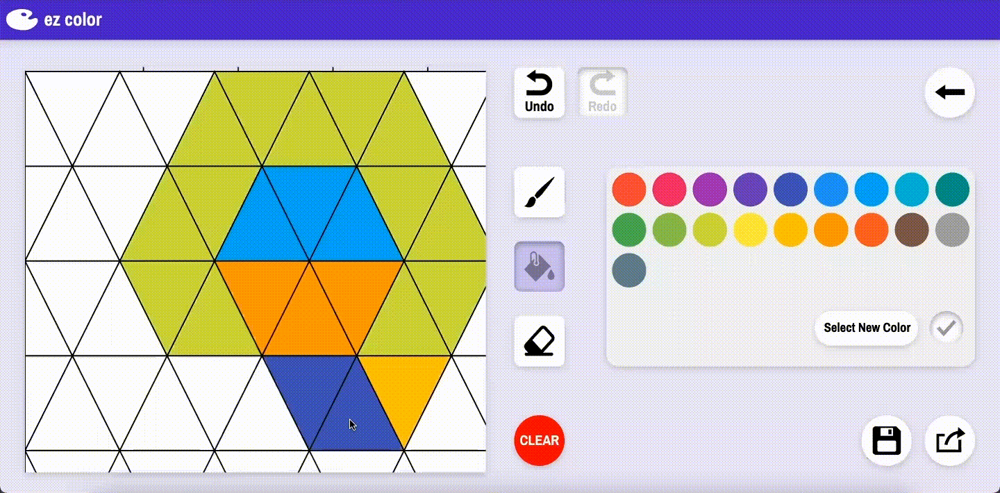
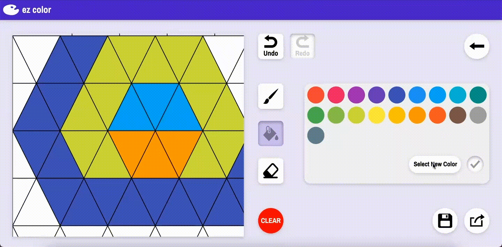
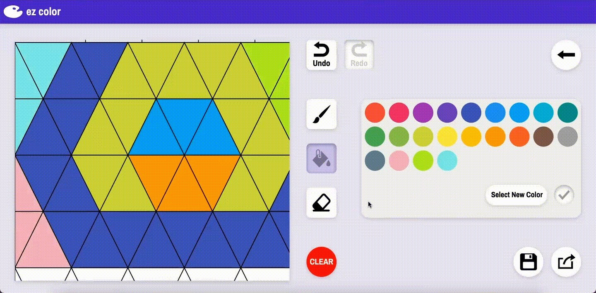

BACKGROUND
Ezcolor is a web application designed to provide easy coloring activities for all ages. For my CS160 midterm project, the objective was to practice iterating through the design cycle and creating a functional coloring application, where users can find coloring pages and have fun coloring them right within the webpage.
My idea with this project was to create Ezcolor, a coloring app designed with a friendly color scheme and minimalist user interface that would make it easy for anyone of any age to enjoy coloring a drawing.
HIERARCHICAL TASK ANALYSIS
Although a hierarchical task analysis would typically be used for more complex applications, using such approach allowed me to analyze the process of coloring and break it down to key subtasks. This would help with my sketching stage when figuring out what capabilities I would provide to the user.
SKETCHES + WIREFRAMES
I produced some quick sketches to get an overall idea of how I wanted the coloring app interface to look like.
Some key features I wanted to highlight were a large and widely visible canvas, as well as a color palette built to be easily understood.
Creating a wireframe for Ezcolor helped me further formalize the process of selecting a coloring page from the home page and the different actions a user can perform within the page.
FIGMA PROTOTYPING
Using Figma, I brought the designs from my rough sketches to life, focusing on the homepage and an example coloring page. I chose a friendly purplish color scheme and a minimalist style with large icons and fonts.
Within the prototype, I chose to implement a design metaphor by stylizing the color palette in the shape of an actual painter’s palette.
FINAL DESIGN + IMPLEMENTATION
Lastly, it was time to implement my final design into a properly functional product, using HTML, CSS, and Javascript.
I was able to create a functional canvas using Paper.js, an open source vector graphics framework.
Despite having a functional paint, erase, and fill tool, there are still many improvements I can make with my final prototype. I struggled with creating an undo and redo feature within the interface, as that turned out to be more complex than I imagined.
1. Opening and deleting existing coloring pages

2. Selecting color on palette and painting

3. Using the erase tool

4. Adding a new custom color onto palette

5. Resetting the canvas using clear tool



{kind=link}
{kind=link}
{kind=link}